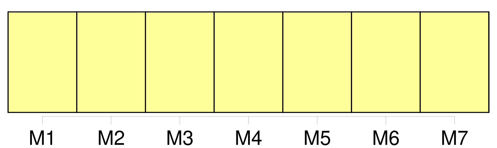
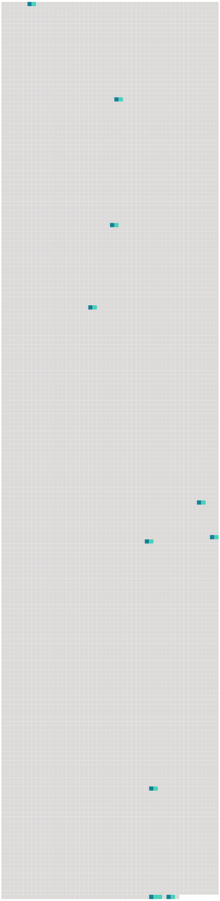

Longueur nb maillons : 10 mentions |
 |
Le grondement du fleuve monte derrière [la maison] [73 phrases] Si tu le retenais [au logis] !! [62 phrases] Elle se sentait un peu responsable des accès de déraison, où disparaissaient à chaque fois, avec l’ argent de [la maison] , les faibles restes du bon sens de son mari. [56 phrases] Pendant ce temps, le vieux Jean-Michel attendait devant [la maison] , sous la pluie, la barbe mouillée de brouillard. [126 phrases] Il est à [la maison] , assis par terre, les pieds dans ses mains. [29 phrases] Certains jours, il profite de ce que sa mère a le dos tourné, pour sortir de [la maison] [2 phrases] [La maison] est au bout du pays ; la campagne commence presque aussitôt. [119 phrases] Il portait dans sa tête la carte des creux et des bosses de tout le pays qui s’ étendait à deux kilomètres autour de [la maison] [72 phrases] Maintenant, c’ est le soir dans [la maison close] [La maison] …… |
 |
Il est possible de télécharger la ressource sur la page Ortolang |
Si vous avez des questions ou vous voyez des erreurs, merci d'envoyer un mail à silvia.federzoni89@gmail.com |